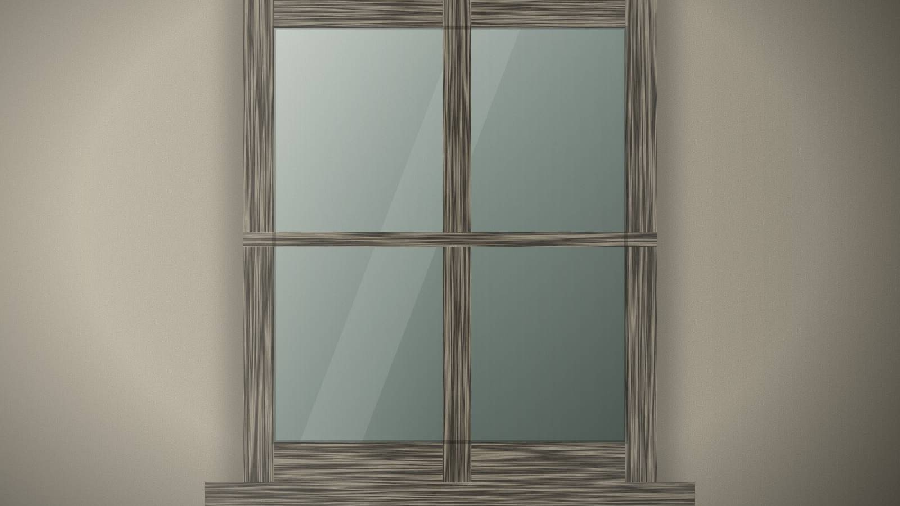

Iz radionice
Kada vredi sačuvati stari prozor?
Oljuštena boja i promaja ne znače da je prozor došao do kraja. Pre nego što bilo šta odlučimo, pažljivo gledamo.

Oljuštena boja, promaja, krilo koje zimi zapinje. Mnogima su to znaci da prozor mora da ode. Često su to samo znaci da mu je potrebna pažnja.
Gledamo pre nego što odlučimo
Pre nego što bilo šta preporučimo, trudimo se da razumemo prozor koji je pred nama:
- Konstrukcija — kako je napravljen i kako su delovi spojeni.
- Profili — oblici letvica i prečki, koji fasadi daju veliki deo njenog karaktera.
- Proporcije — u kakvom je odnosu prozor prema zidu i drugim otvorima.
- Materijal — koje je drvo korišćeno i kako je ostarilo.
- Stanje — gde je stradao i koliko je oštećenje duboko.
- Arhitektonski karakter — kakvu ulogu prozor ima u zgradi kao celini.
Popraviti, rekonstruisati ili zameniti
Tek tada odlučujemo. Gde je drvo zdravo, popravka čuva originalni materijal i rad ljudi koji su ga napravili. Gde delovi više ne mogu da se spasu, rekonstruišemo ih. A gde prozor zaista mora da se zameni, trudimo se da to uradimo istim jezikom, kako bi zgrada sačuvala svoje lice.
Sačuvati ono što zaslužuje da ostane
Nije sve staro dragoceno. Ali mnogo toga je bolje nego što izgleda na prvi pogled — i mnogo toga zaslužuje da ostane.